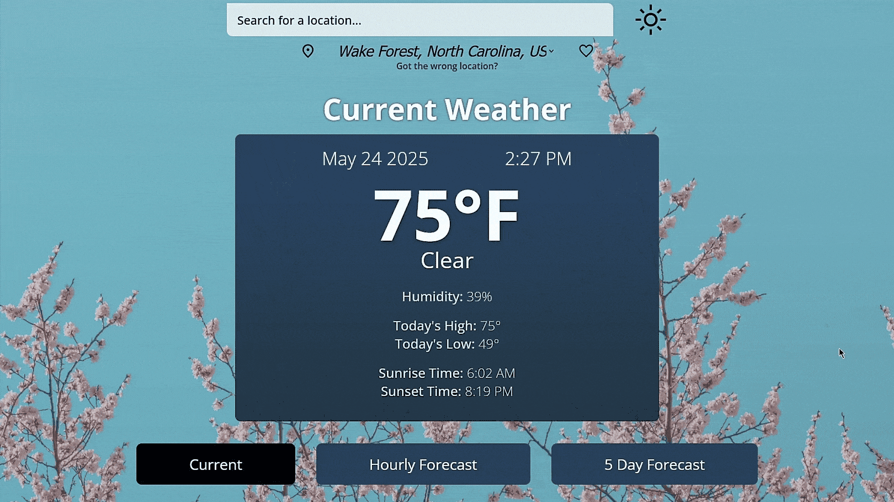
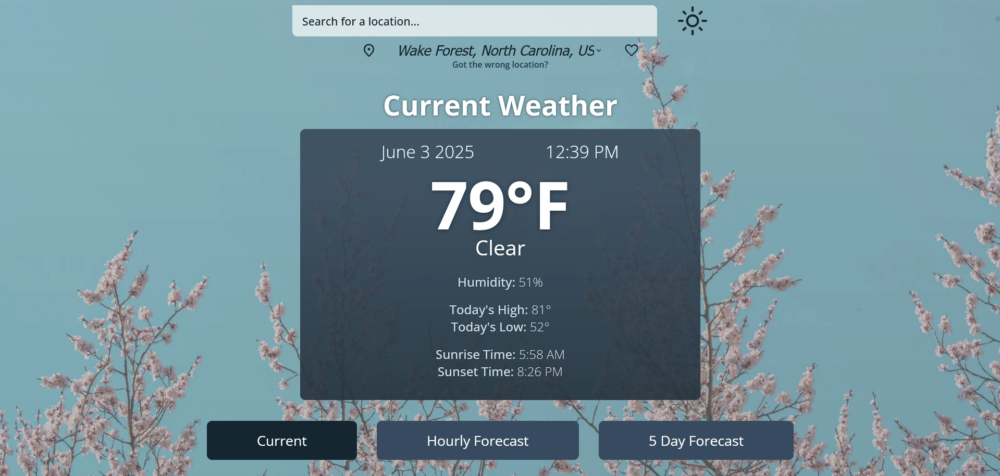
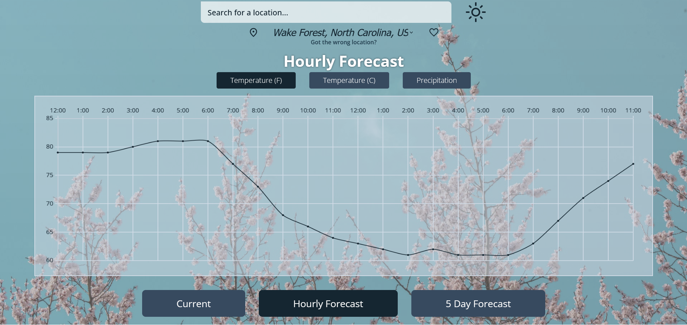
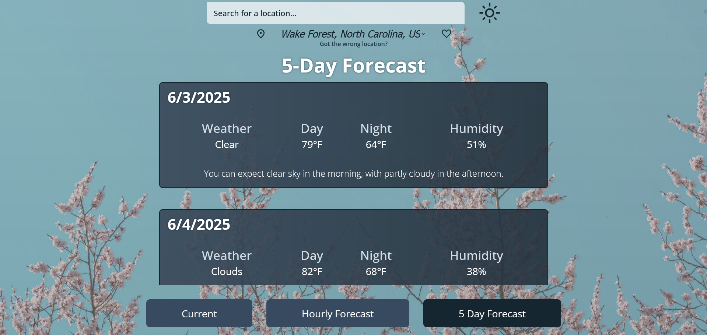

How can I make a weather app that provides accurate and timely information to users all around the world?
The Weather Discovery App draws from OpenWeather API in order to display weather information, accurate to the minute, for locations worldwide. Axios is used to help fetch and manage API requests in a timely and resource-efficient manner. Built into the Weather Discovery App is a simple overview of the basics, such as temperatures for the day and humidity, as well as ChartJS graphs showing temperature and precipitation data through the day. A 5-day forecast is also available for users to plan their activities accordingly, complete with short summaries of expected weather. Vue, a JavaScript framework known for its reactivity and organized architecture, supports the app's dynamic and interactive UI.
Alongside the split-second weather information precision, this app also includes the ability to save locations around the world for easy reference. A built-in mechanism to switch between Celsius and Fahrenheit temperatures keeps the app accessible worldwide, and dynamic backgrounds and dark mode help provide visual cues for time and weather condition at a glance.



I'm still proud of this app's architecture and interactivity to this day. However, looking back on it with the benefit of hindsight, I feel that I could have given the UI more consideration to make the Weather Discovery App a truly seamless experience.